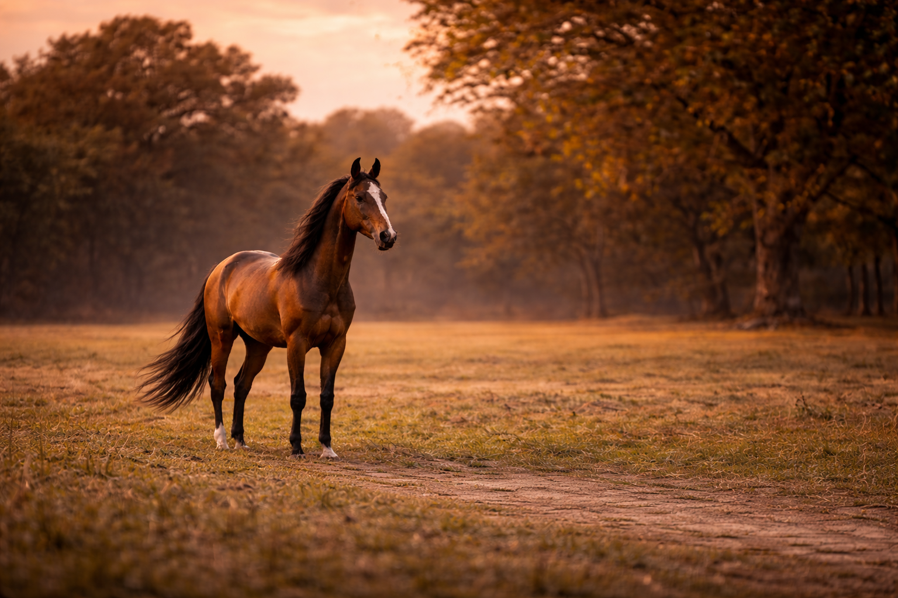

A light and agile pony from northeastern India known for its speed and endurance.
The Manipuri horse is often used for polo and riding in the Manipur region. It is prized for its quick reflexes, bravery, and adaptability to hilly terrain.
| Origin | Manipur, India |
| Height | 12-14 hands |
| Use | Polo, riding, local transport |
| Temperament | Alert, intelligent, willing |